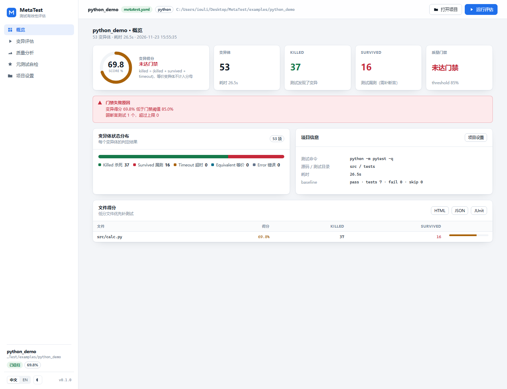
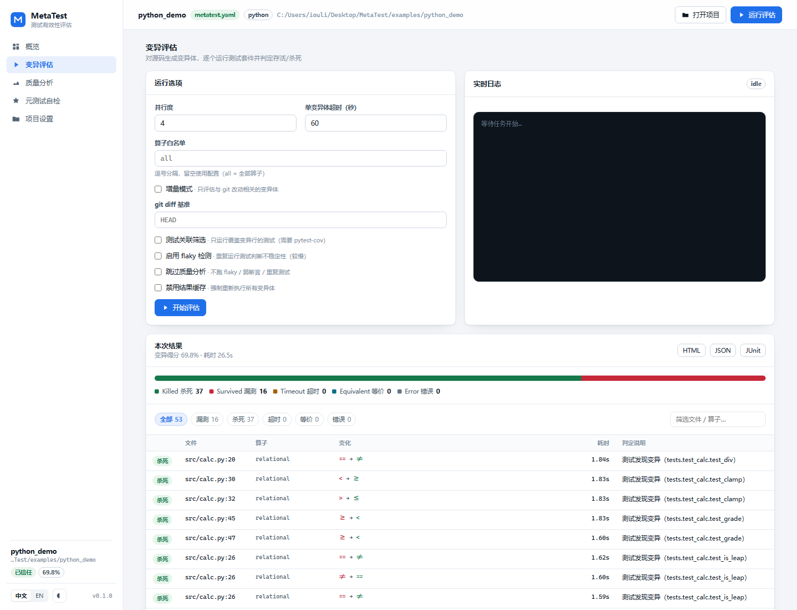
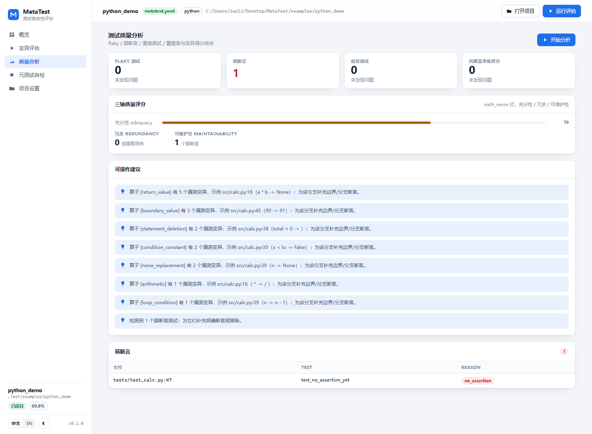
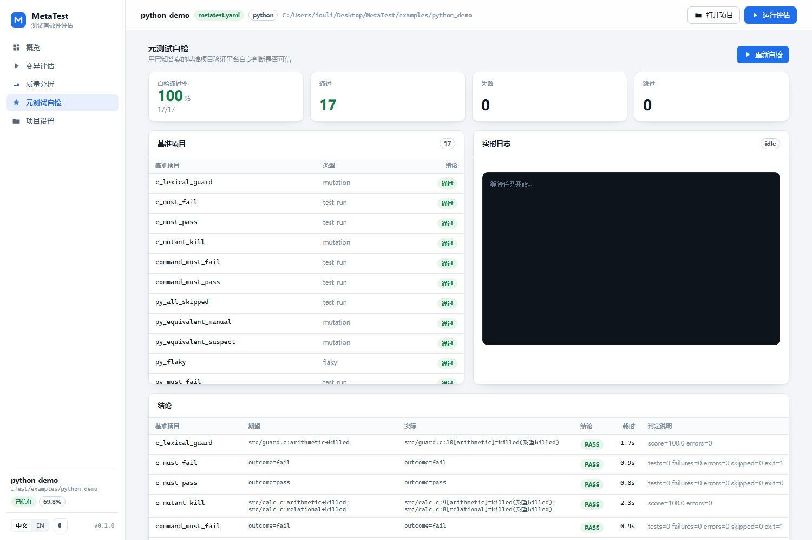

不用记命令，打开界面就能选项目、跑变异评估、看漏测位置、做质量分析和元测试自检。控制台与 CLI 共用同一套引擎与判定语义。
metatest/web），设计为仅监听 127.0.0.1、无鉴权，MVP 不做 SaaS、不支持公网部署。本页是控制台的介绍与截图，不是在线可用的控制台实例。要使用控制台，请在本地安装后启动。
metatest ui # 已 pip install 时，自动开浏览器，默认 http://127.0.0.1:8777
python -m metatest.web # 源码目录下
MetaTest.exe # 打包版（双击即用，约 25 MB）| 参数 | 说明 |
|---|---|
| --port N | 指定端口（默认自动选择 8777 起的空闲端口） |
| --host H | 监听地址（默认 127.0.0.1，不建议改） |
| --no-browser | 不自动开浏览器（服务器 / 远程场景） |
| --project DIR | 启动后直接打开该目录 |
支持中英双语切换与明暗主题，纯离线静态资源（无 CDN、无外部字体）。




控制台会执行 metatest.yaml 里的命令，因此安全模型建立在「仅本机」之上：
127.0.0.1，拒绝非 localhost 的 Host 头，防 DNS rebindingX-Metatest-Client: web，跨站无法伪造